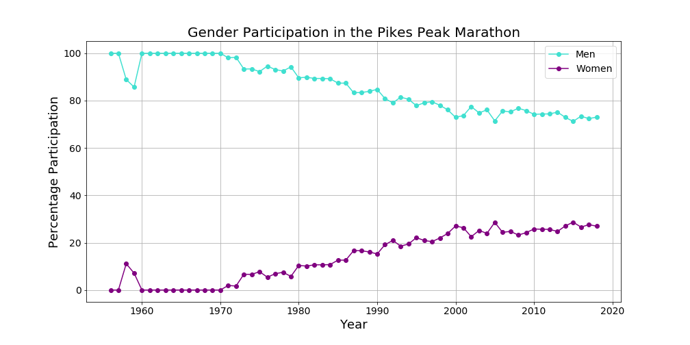
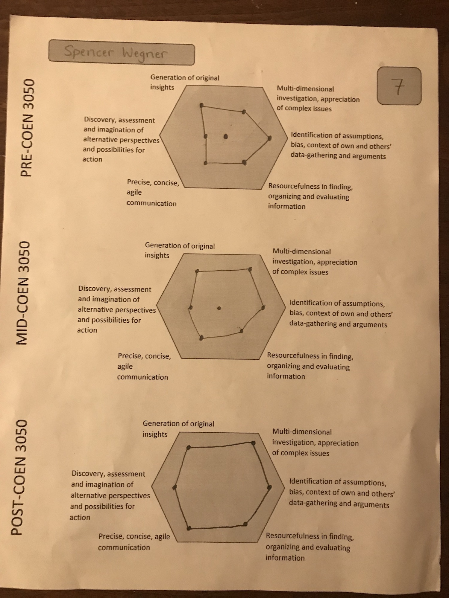
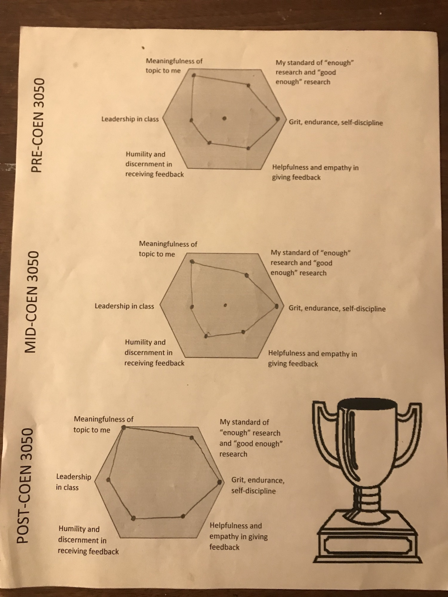

Welcome! My name is Spencer Wegner and I am a student at the
University of Colorado Boulder. This website is an ePortfolio that contains
all of the research and work that I did for a course called Complex Leadership
Challenges. Learn more about my motivation for choosing running as a topic in
the Synthesis Project section.
I am a Computer Science major, but I am also pursuing minors in Business and
Technology, Arts, and Media and a certificate in Engineering Leadership. This
course serves to fulfill requirements for my leadership certificate.
How to Navigate the Website
Each lens encapsulates a research assignment. I explored many topics in
running including interpersonal relationships between runners, gender disparity
in mountain, ultra, and trail running, and human evolution in running. You can
find final versions of all the different assignments under the Lenses tab.
For my Synthesis Project I recorded a podcast that pulls all of the research
together in an attempt to pull further insight from all of the work that I did.
You can find the podcast and my reflection on the course under the
Synthesis Project tab.
You can find information about all of the wonderful people that I had the
privilege to interview during my research under the Interviews tab.
You can find all of the books, articles, interviews, recordings, et cetera that I
referenced under the References tab in case you want to explore any
of the topics further.
About the Course
The course not only aims to teach leadership but to model leadership, purposefully
exemplifying intentional leadership choices and actions. For instance, it “practices
what it preaches” by grounding its design in an understanding of a particular need:
our communities need leaders with the knowledge, skills and virtues required to
grapple with especially complex challenges. Toward this end, Complex Leadership
Challenges is designed to cultivate skills leaders need to understand, communicate
about, and generate innovative approaches to complex issues. It emphasizes leadership
as a rigorous process, encouraging students to fully invest in scrutinizing their
chosen issue topics through multiple lenses and conducting extensive, principled
research before drawing conclusions and advocating solutions. Progress toward course
objectives requires an intensive iterative process where each assignment is revised
multiple times in response to peer, class mentor and instructor feedback.
The Runner's Interface
Physiological
Experience
Experience in varied terrain, course, and weather conditions enables runners to react quickly and more positively in difficult situations (Epstein).
Accumulate 10,000 hours of practice time to become an expert in anything (Epstein).
There is no such thing as overtraining, only under-resting (Kastor).
Software vs. Hardware
Perceptual skills are not genetic or part of human “hardware”; experts must “download” them as “software” (Epstein).
Less talented athletes that have passion and perseverance (grit) can be more successful than naturally gifted athletes (Duckworth).
Athletes with natural ability initially gain more through practice than athletes with lesser ability (Epstein).
Elite athletes have great “hardware” and learned “software” (Epstein).
All athletes can improve significantly with deliberate practice (Duckworth).
Clearly defined stretch goal.
Full concentration and effort.
Immediate and informative feedback.
Repetition with reflection and refinement.
Body Types and Processes
Body types of athletes have adapted to specific sports (Epstein).
Elite marathoners are smaller because they have more skin surface area relative to their weight which helps keep the body cool.
Muscle types define athlete potential (Epstein).
Fast-twitch muscle fibers can pack on muscle more easily than slow-twitch muscle fibers.
Fast-twitch muscle fibers have a hard time burning fat.
Different muscle types allow athletes to succeed in different events.
The body is more likely to adapt to strains if it has the proper proportions of oxygen and fuel (Hutchinson).
Runners need range of motion to run efficiently and injury-free (Dicharry).
Ankle, Achilles tendon, hip flexor, and hamstring.
Humans began migrating out of Africa 90,000 years ago in small groups (Epstein).
There is large genetic variation in Africans and less variation in Europeans and Asians.
Genetic makeup is only part of success.
Psychological
Belief
Belief in your potential leads to success (Kastor).
Every cell in our body is aware of our thoughts, feelings, and beliefs (Kastor).
If you believe you are fragile, your body obeys and manifests it.
If you believe you are tough your body undeniably mirrors it.
Perception
You control how the pace feels (Kastor).
Thinking a certain pace should be easy is dangerous when it is very hard.
Appreciate the process (Roche).
Life only flies by in retrospect.
Embrace the present moment.
Focus on smaller achievements and overall improvement rather than race results (Kastor).
Dream big, but don’t attach your self-worth to whether you achieve your high expectations.
The secret to longevity in ultrarunning is the ability to laugh when you want to cry (Jurek).
Positivity and Goodness
Every positive micro-decision accumulates and leads to potential and possibility (Kastor).
Joy and Excitement
Everything needs energy to keep it together (Roche).
A community has people that bring energy to running and make it exciting day after day.
A positive approach leads to resilience, gratitude, awe, and optimism (Kastor).
Find the magic in the mundane and you will find purpose and contentedness (Roche).
Constantly spread loving energy to those around you and remind yourself that you are awesome.
Mind-Body Connection
The brain has a “central governor” that protects the body by limiting stress placed on it (Hutchinson).
It is possible to train the brain to withstand more pain and discomfort (Hutchinson).
Runners benefit by learning to deal with discomfort.
Self-Discovery
Limits
Training, racing hard, and pushing limits is how we grow and learn (Kastor).
We can uncover deeper layers of strength and optimism at difficult moments.
Growth is constant; self-mastery is never ending.
Fear is a process through which one can extend the practice of one’s own daring (Lawrence and Burnaby).
Fear is an opening of possibility, desire, reward, and strength.
Mindfulness
Practicing gratitude can open up a new channel of energy within you (Kastor).
Mental clarity leads to human compassion (Kastor).
Improve the self and bring more love to others.
Works Cited
Dicharry, Jay. Anatomy for Runners: Unlocking Your Athletic Potential for Health, Speed, and Injury Prevention. Skyhorse Pub, 2012.
Duckworth, Angela. Grit: The Power of Passion and Perseverance. First Scribner hardcover edition, Scribner, 2016.
Epstein, David. The Sports Gene: Inside the Science of Extraordinary Athletic Performance. CURRENT, 2014.
Hutchinson, Alex. Endure: Mind, Body, and the Curiously Elastic Limits of Human Performance. First edition, 2018.
Jurek, Scott. North: Finding My Way While Running the Appalachian Trail. First edition, Little, Brown and Company, 2018.
Kastor, Deena. Let Your Mind Run: A Memoir of Thinking My Way to Victory. First edition, Crown Archetype, 2018.
Roche, David, and Megan Roche. The Happy Runner: Love the Process, Get Faster, Run Longer. Human Kinetics, 2019.
The Physical, Emotional, and Psychological Benefits of Running with Others
While running is largely an individual pursuit, runners who run with other runners
find improvement in their performance, connection to a supportive community, intimate
relationships, and long term happiness.
Among training groups with supportive environments that focus on self-respect and the
personal development of all members, runners naturally improve, especially when some
of the other runners are faster and more experienced. In a meta-analysis on the effects
of Girls on the Run, a program for young girls that uses distance running as an
educational platform, Martin and Nash found that running with peers while receiving
quality coaching is a very affirming experience that enhances self-esteem, personal
development, and skill development. While girls in the program receive direct social
support from friends and teammates, the environment promotes individual success, provides
motivation and incentive for training, and increases confidence and accountability
(Martin and Nash). Training groups are a great way for runners to build confidence and
self-esteem, challenge themselves against other runners, remain humble, and ultimately
achieve superior performance.
When runners come together, communities are born. Whether a runner is running with a
partner or a group, they find a sense of belonging. Because runners face similar
challenges, they understand one another on a physical and emotional level. This
understanding allows runners to look out for and positively impact one another (Wurtz).
While race goals are important for motivation, the running community provides a constant
appreciation of the training process and daily practice of running. Runners make
connections and socialize in environments that are friendly and unfiltered; anything
goes and much is learned by all (Striders). When runners emphasize their connection to
the community and de-emphasize competition, they work toward consistency and lifelong
happiness (Roche).
Running fosters intimate relationships. Relationships develop from vulnerability, and
running quickly strips individuals down to their physical and mental vulnerable core
(Roche). Even if two runners meet for the first time and do a workout together, there
is a real, gritty, and challenging shared experience within the first moments of their
relationship. The shared suffering bonds the two runners faster than most relationships.
In contrast, many other relationships start slowly because people naturally avoid
vulnerability. However, all relationships require a baseline of trust (Roche). While
runners’ vulnerabilities are exposed early in relationships, runners’ relationships take
time and experience to build up trust, just like any other relationship. The early
exposure to runners’ true selves speeds up the process of building strong relationships.
Runners also tend to have more stable relationships in the long term. While all people
are faced with mortality, runners are more likely to understand and embrace the reality
than non-runners (Roche). Runners and other athletes constantly move their bodies and
witness them break down over time. Frequent reflection on the state of the body leads
runners to take a more humble perspective on life. Many people seek perfection in
relationships and hold high ideals, which often leads to disappointment and unhappiness.
Runners realize their fragility and know by the highs and lows of the training process
that perfection in anything is unattainable. This state of mind lends itself to healthy
relationships that are resilient to hardships and can tolerate the ups and downs of life.
Interpersonal relationships not only help runners improve their performance but create a
healthy relationship with the sport. Running communities give runners the support they
need when they battle with injuries, lack motivation, or need advice. Positive relationships
connect runners with other like-minded people, get them out of their own heads, and lead to
lifelong happiness.
Works Cited
David Roche. Importance of Running Relationships. 6 Feb. 2019.
Gender Disparity in Mountain, Ultra, and Trail Running
There is a significant gender gap in mountain, ultra, and trail (MUT) running. While both male and female
participation in the sport has grown rapidly since 2000, a large majority of participants are men. In 2017,
out of about 300,000 ultrarunners worldwide, approximately 50,000 were women (Scheer). The barrier to entry
to MUT running is low; only trail shoes and trail access is necessary, so men and women are equally capable
of entering the sport. The gender gap may exist for many reasons, but an increased awareness of the disparity
and cultural changes achieved through storytelling may allow gender parity to be reached.
The Pikes Peak Marathon is a world renowned mountain race. The first official female marathon finisher in the
United States, Arlene Pieper, ran the race in 1959. Even though Arlene proved women belong in the sport and
inspired many women to compete, the race still has a gender gap today. The graphic below shows the percentage
of men and women who ran the Pikes Peak Marathon from 1956 to 2018. Although the gender gap gradually tightened
from 1970-2000, the proportion of women has settled around 25% in the last 15-20 years.

There is not a single cause for gender disparity, but there are a few cultural phenomena that exclude women.
Historically, men have held the majority which has created a male-dominated culture that can make women feel
unwelcome. Women are also more likely to be concerned about running alone and have inhibitions about predators
(Fraioli). Social norms dictate that women usually take on household and familial duties. While men go out for
their run in the morning, women stay home to get the kids ready and do not have time for MUT running. They may
choose physical activities that take less time (Wurtz).
Road running also had gender disparity before it gained popularity among women. After women were allowed to
compete in races in the 1960s and 1970s, female participation did not increase right away. The business acumen
of gear manufacturers and race directors created products and events specifically for women which allowed more
women to find the sport and gender parity eventually ensued (Koop).
MUT running has the potential to follow a similar trajectory towards gender parity. As the popularity of the
sport has skyrocketed over the last 10 to 15 years, gear manufacturers have created an entire market around
women’s apparel for MUT running. Women tend to consume more than men, so when they see gear made specifically
for female MUT runners, they feel that MUT running is a sport for them (Hobbs).
Female elite athlete representation has increased as a result of the increased popularity. Elite women have only
recently begun to create careers for themselves in MUT running. Before sponsors started supporting female MUT
runners, women may have chosen to stay on the roads where they could make a living. Because sponsors have
increased their support of female MUT runners and shared their stories, more elite women can create successful
careers and show non-elite women that there is a place in the sport for them.
Races are the events that define the spirit and culture of the sport. This means race organizations have the
power to create a more inclusive culture where women are treated equally (Hobbs). The Loon Mountain Race offered
a discount to first time female participants, and many races such as the Barr Trail Mountain Race make a point to
award equal prize money to men and women.
If gender parity will ever be reached in MUT running, it will happen because of storytelling (Fraioli). People
are significantly more likely to try MUT running after hearing inspiring stories, especially stories of people
that they can relate to (Yang). If women see other women find happiness and success in the sport, they are
likely to give it a try. As more women enter the sport, the male-dominated culture is naturally disrupted and
the culture becomes more diverse and inclusive.
The sport of mountain, ultra, and trail (MUT) running is growing very quickly. According to a
participation analysis done by Dr. Volker Scheer, participation in ultrarunning has increased
by 200% since 2009, and because of the similarities of the disciplines, more runners find mountain
and trail running as well.
This spectacular growth changes the sport’s culture. More media attention surrounds events, more
sponsors and gear manufacturers try to capitalize on the rapidly growing market, and governing
bodies set more rules and regulations. Runners should be aware of how a more commercialized MUT
running culture affects their personal relationship with running.
The MUT running community’s ultimate goal to land an event in the Olympics fuels the commercialized
culture. While road running and track events shine during the summer games, MUT running has been left
out because of logistical and popularity reasons. Salomon, a prevalent brand in the sport, has shown
that MUT running deserves an Olympic event through its Golden Trail Series (GTS). The series highlights
several well known MUT running events around the world and attracts many elite athletes. Runners and
mountain bikers with cameras and drones help to stream the races live online. The GTS races attracted
audiences as large as 30,000 on YouTube in 2018, proving that MUT running can be exciting to watch and
deserves an Olympic event.
The Pikes Peak Marathon partnered with Salomon and joined the GTS. It is a unique mountain race with a
rich history that has challenged runners for 63 years. Runners enter the race to push themselves and
discover their physical and mental limits, and to engage in the strong, supportive running community
that welcomes all runners and supports them on their journey up and down Pikes Peak. As part of the
GTS, Salomon has brought more attention to the event and placed more elite athletes in the spotlight.
While the race organization shares stories of non-elite runners and the greater running community on
its Facebook page, a growing number of its posts give attention to high-profile athletes running the
race. The commercialization of the race places more focus on the elite runners which naturally initiates
conversation about predicted times and results. Other participants may internalize a false importance of
results and allow the clock to determine their success on race day.
Like Salomon’s GTS, many MUT race organizations around the world commercialize their events. Elite athletes
have larger incentives to place well at races because of larger prize purses and more potential sponsorships.
To ensure integrity in the sport, USA Track and Field (USATF), the governing body for sanctioned running
competitions in the United States, has developed rules and regulations around banned substances and drug
testing protocol. While USATF contracts the U.S. Anti-Doping Agency (USADA) to administer drug testing for
USATF events, private race organizations also invest in drug testing to ensure their events remain fair.
USATF has the moral responsibility to create and recommend anti-doping procedures, but it unintentionally
makes drug use a part of the sport’s culture. Lance Armstrong notoriously ruined the integrity of cycling.
He was one of many professional cyclists who abused performance enhancing drugs (PEDs) to gain advantages
over his competition. Armstrong stated in many interviews that cyclists did not have a choice of whether
to use PEDs. Because PEDs were conventional among elite fields, cyclists who raced clean were at a significant
disadvantage and were likely to lose their competitive edge and fall out of the sport. Competitive cycling
culture devolved as athletes took drastic measures to hide signs of drug use from race officials. After
Armstrong and other athletes were caught, the greater cycling community was overwhelmed with the toxic culture.
People struggled to comprehend the greedy and immoral behavior of elite athletes and questioned their own
motivations for participating in the sport. The individual and interpersonal benefits of the sport were
overlooked because everyone was concerned about cheating.
As MUT running grows and more drug tests are conducted, there will be athletes who test positive. These athletes
will ruin the integrity of the sport and will disrupt the positive culture that encourages runners to be the best
version of themselves and respects and appreciates all runners for their natural abilities. Elite athletes will
always be concerned with their performance, but they must convey the individual and interpersonal benefits of the
sport to non-elite athletes. This will foster a positive relationship between elites and non-elites and show that
runners of all abilities have something to gain from the sport.
A growing number of elite athletes effectively connect with and relate to various running communities. Some athletes
work with non-elites during running clinics and camps put on by their sponsors, but most reach the general public
through social media. Colleen Quigley, an Olympian in the steeplechase, frequently updates her Instagram account to
connect with her followers. She posts content that all runners can relate to such as dealing with injuries, getting
out to run when she lacks motivation, and playing with her dog, Pie. She created the hashtag #fastbraidfriday which
encourages women to embrace their natural beauty and be confident in themselves by running with french braids. The
trend created a large online community of supportive women who motivate one another in their running endeavors. While
some athletes’ social media feeds share lifestyles that are exclusive to professional athletes and create a gap between
elites and non-elites, Colleen’s feeds close the gap and show that elites and non-elites share many of the same
experiences and deal with the same challenges. If more elite athletes work to connect with the average runner, the sport
will grow and the positive culture that generates personal growth will remain in tact.
Running is largely an individual pursuit. Runners run to relieve stress, to push themselves, and to prove to themselves
that they can overcome challenges. Running is a playground for life experimentation. Runners learn and practice skills
that they will use in the real world. Runners develop their identities and find strong interpersonal connections with
other members of the running community. Unfortunately, this new highly competitive, commercialized culture supplants
MUT running’s grassroots culture in which runners run solely for unique experiences, personal growth, and connection
with others. As the culture becomes similar to other professional sports like football, basketball, and baseball where
athletes and coaches claim their sole purpose is winning championships, many runners begin to focus on their results
because the culture values fast times. All runners will have poor performances and inevitably slow down as they age.
If they are results driven, their running will not be sustainable because less than desirable results will ruin their
relationship with the sport. To achieve long term happiness, runners must remember why they started running in the first
place and not measure their success solely on race results.
More elite competition and commercialization help to grow MUT running: Salomon’s GTS will likely help MUT running become
a sport in the Olympics and encourage more people to get into the sport. However, the industry and running communities
must take steps to mitigate the effects of hyper-competitive events that lead to cheating and promote aspects of the sport
that allow runners to thrive.
Why You Should Run
Presentation Slides
Works Cited
Duckworth, Angela. Grit: The Power of Passion and Perseverance. First Scribner hardcover edition, Scribner, 2016.
Roche, David, and Megan Roche. The Happy Runner: Love the Process, Get Faster, Run Longer. Human Kinetics, 2019.
Stephanie Wurtz. The Gender Gap in Mountain, Ultra, and Trail Running. 8 Mar. 2019.
Stulberg, Brad, and Steve Magness. Peak Performance: Elevate Your Game, Avoid Burnout, and Thrive with the New Science of Success. Rodale, 2017.
The Sport that Unites and Inspires
The following narrative is based on a true story.
Emma sees a shadow ahead as she stumbles over the technical trail. It is
sometime around midnight, and Emma is focused with her vision locked ahead
in the bright beam of her headlamp. The shadow stops moving as she approaches
and she slows to a stop. The shadow turns into another runner as Emma shines
her light on him. The man sits on a rock on the side of the trail with his
head hanging down. He breathes heavily despite this downhill section of the course.
“Are you OK? Can I help you with anything?”
The man grunts and mutters some Spanish.
“Here, take my spare headlamp. It’s not great, but it’s better than nothing.”
The man reluctantly takes the headlamp and fumbles with it, eventually securing it on his head. Emma continues to try to get something out of the man.
“Have you had anything to eat recently?”
He turns his bottle upside down. Empty. Emma offers him an energy gel.
“Here. Eat this. Now.”
He takes the gel and starts eating slowly. His body language shows that he is very frustrated with how his race is going but is too exhausted to express it in words. After he finishes the gel, Emma offers him a hand and pulls him to his feet. He almost falls down, but finds his balance. Emma remembers her high school Spanish.
“Cuál es tu nombre?” What’s your name?
After several breaths he responds.
“Andrés.”
Emma grabs his hand and starts pulling him down the trail.
“Follow me. That backup headlamp is not nearly bright enough. Stay with me and use my light.”
The man follows and finds some English.
“Thank you.”
Emma and Andrés traverse the TDS course through French Alps by way of Emma’s headlamp.
Andrés struggles along with his caloric deficit and wonders if he will finish the race.
Emma tries to be encouraging.
“I know this is tough. It’s not supposed to be easy. Otherwise everyone would do it.”
Andrés stops several times to rest, but Emma only allows him one minute before pulling
him back to his feet. She tries hard to continue talking to keep his mind going and to
give him something to focus on besides his upset stomach and sore body. A story comes out.
“You know, there are a lot of things in life that are harder than this. This… this is
just putting one foot in front of the other. When things get tough, I think a lot about
my younger sister. She had Spina Bifida, a debilitating birth defect... I played a very
large role in caring for her - she couldn’t walk, go to the bathroom on her own, and
ended up having a trac and was on a breathing machine for the last 13 years of her life.
I cared for her daily from a very early age. We were super close. My family had to say
goodbye to her on four different occasions. For three of those times, she came back
despite the doctors’ warnings. She was a fighter! Her mind was healthy. She loved people
and was almost always happy. That didn’t keep her from saying how she wished she could
go out and play with us or that she wished she could walk. She didn’t allow her
limitations to dictate what she could accomplish. She kept a positive attitude. It’s
because of her that I choose to live the life I do. I live it with purpose and intent
and I choose to move for her every day.”
Andrés does not understand Emma’s story entirely, but he begins to move better. He picks
his head up and his posture improves. He thinks about why he started running in the first
place.
“Yo solía beber. Mi vida estaba fuera de control. Siempre fui miserable a menos que
tuviera una bebida. Correr me ayudó a estar sobrio.” I used to drink. My life was
out of control. I was always miserable unless I had a drink. Running helped me get sober.
Andrés is silent for several minutes. He taps on Emma’s shoulder.
“More food?”
Emma smiles.
As dawn approaches, Emma begins to lack energy and motivation. She is very fatigued.
The pair enter Les Houches, a French town about eight kilometers from the finish
line in Chamonix. Emma knows she will finish the race, but thinks it might be in
her best interest to take a short rest. She directs Andrés’ attention off the trail.
“Look, there’s a nice platform to rest on.”
She leaves the trail but Andrés doesn’t follow her.
“You can go on, don’t worry about me.”
She begins to lay down but he doesn’t move.
“Let’s go,” he says. “You help me, and now I help you.”
Even in her tired state, Emma knows she has to find a similar strength that Andrés
found earlier in the night. Moving on is in her best interest. After eating some
warm soup at the aid station in town, Emma and Andrés run to the finish line together.
--
This narrative illustrates the importance of storytelling in the sport of running. When
people share their experiences, they not only inspire other people to run and reap the
sport’s benefits, but they illustrate how the lessons learned in running can be applied
to other aspects of life.
Running specific content such as race coverage, training methodology, and gear reviews
only garners the attention of runners who are heavily invested in the sport. There are a
lot of people who identify as runners that do not care about this content, and it does
not reach non-runners at all. Stories about becoming, failing, and self-discovery told
in the context of running are much more relatable (Yang). They garner much more
attention, showcase the humanness of runners, and can be inspiring to people who have
never run before.
Few people believe that they inspire others. They feel that their personal stories have
no value, and that they are not worth sharing. Writer and podcaster Mario Fraioli has
found that it is important for everyone to share their stories. He has spent his entire
career in running media interviewing elite athletes and telling their stories. Followers
of his content often share how they are moved by the elite athletes’ stories he shares.
This makes sense to Mario, who often sees similarities between his own running experiences
and those of elite athletes, just like his followers do. As his content became more
popular, Mario’s followers started to ask him to share his own stories. He was reluctant
to at first because he did not believe that sharing his stories was worth while, but
eventually he did. People found his stories relatable, just like the stories of elite
athletes that he had been telling all along. This shifted his perspective on
storytelling, and now he believes that everyone should share their stories because their
experiences will resonate with someone (Fraioli).
In the context of the narrative above, the importance of storytelling shines through.
When Emma is trying to encourage Andrés to continue on, her running origin story comes
to the surface. She shares her story with Andrés, which leads him to connect with his
past. In so doing, he finds a deep inner strength to push on. Even though he does not
have much in common with Emma, her story inspires him to reflect on his own life.
The fact that Emma stops to help Andrés when she could have easily sped by shows that
running is more about the pursuit of the individual than results and triumphing over
others. Emma and Andrés helped each other which shows people can work together to
achieve their personal goals. In the context of the race, it does not makes sense that
Emma would stop to help another struggling runner. The idea of a race is that everyone
tries to go as fast as they can, and Andrés certainly slowed Emma down, at least
initially. In the end, Andrés saved Emma time because if he was not there, she would
have lain down and rested. This narrative as a whole shows that it is possible to take
a different perspective on other people. Others can be seen as competitors or just
people in your way, or they can be hidden gems that help you along on your journey.
Bramble, Dennis M., and Daniel E. Lieberman. “Endurance Running and the Evolution of Homo.” Nature, vol. 432, no. 7015, Nov. 2004, pp. 345–52, doi:10.1038/nature03052.
Lieberman, Daniel E., et al. “Brains, Brawn, and the Evolution of Human Endurance Running Capabilities.” The First Humans – Origin and Early Evolution of the Genus Homo: Contributions from the Third Stony Brook Human Evolution Symposium and Workshop October 3 – October 7, 2006, edited by Frederick E. Grine et al., Springer Netherlands, 2009, pp. 77–92, doi:10.1007/978-1-4020-9980-9_8.
Bramble, Dennis M., and Daniel E. Lieberman. “Endurance Running and the Evolution of Homo.” Nature, vol. 432, no. 7015, Nov. 2004, pp. 345–52, doi:10.1038/nature03052.
Carron, A. V., et al. “Cohesion and Performance in Sport: A Meta Analysis.” Journal of Sport & Exercise Psychology, vol. 24, no. 2, June 2002, pp. 168–88. Web of Science, doi:10.1123/jsep.24.2.168.
Colman, Michelle M., and Albert V. Carron. “The Nature of Norms in Individual Sport Teams.” Small Group Research, vol. 32, no. 2, Apr. 2001, pp. 206–22. Crossref, doi:10.1177/104649640103200204.
Crust, Lee. “Mental Toughness in Sport: A Review.” International Journal of Sport and Exercise Psychology, vol. 5, no. 3, Jan. 2007, pp. 270–90. Taylor and Francis+NEJM, doi:10.1080/1612197X.2007.9671836.
David Roche. Importance of Running Relationships. 6 Feb. 2019.
Dicharry, Jay. Anatomy for Runners: Unlocking Your Athletic Potential for Health, Speed, and Injury Prevention. Skyhorse Pub, 2012.
---. Running Rewired: Reinvent Your Run for Stability, Strength & Speed. VeloPress, 2017.
Dreama Walton. Stories and Lessons in Running. 4 Apr. 2019.
Duckworth, Angela. Grit: The Power of Passion and Perseverance. First Scribner hardcover edition, Scribner, 2016.
Elbe, Anne-Marie, et al. “The Importance of Cohesion and Enjoyment for the Fitness Improvement of 8–10-Year-Old Children Participating in a Team and Individual Sport School-Based Physical Activity Intervention.” European Journal of Sport Science, vol. 17, no. 3, Apr. 2017, pp. 343–50.
Epstein, David. The Sports Gene: Inside the Science of Extraordinary Athletic Performance. CURRENT, 2014.
Evans, M. Blair, et al. “Seeing the ‘We’ in ‘Me’ Sports: The Need to Consider Individual Sport Team Environments.” Canadian Psychology; Ottawa, vol. 53, no. 4, Nov. 2012, pp. 301–08.
Hambrick, Marion E., et al. “Cohesion and Leadership in Individual Sports: A Social Network Analysis of Participation in Recreational Running Groups.” Managing Sport & Leisure, vol. 23, no. 3, May 2018, pp. 225–39. s3h.
---. Training Essentials for Ultrarunning. VeloPress, 2016.
Jurek, Scott. North: Finding My Way While Running the Appalachian Trail. First edition, Little, Brown and Company, 2018.
Jurek, Scott, and Steve Friedman. Eat & Run: My Unlikely Journey to Ultramarathon Greatness. Houghton Mifflin Harcourt, 2012.
Kastor, Deena. Let Your Mind Run: A Memoir of Thinking My Way to Victory. First edition, Crown Archetype, 2018.
Kilduff, Gavin J. “Driven to Win: Rivalry, Motivation, and Performance.” Social Psychological and Personality Science, vol. 5, no. 8, Nov. 2014, pp. 944–52. SAGE Journals, doi:10.1177/1948550614539770.
Lawrence, Andrea Mead, and Sara Burnaby. A Practice of Mountains. 1st ed, Seaview Books, 1980.
Lieberman, Daniel E., et al. “Brains, Brawn, and the Evolution of Human Endurance Running Capabilities.” The First Humans – Origin and Early Evolution of the Genus Homo: Contributions from the Third Stony Brook Human Evolution Symposium and Workshop October 3 – October 7, 2006, edited by Frederick E. Grine et al., Springer Netherlands, 2009, pp. 77–92, doi:10.1007/978-1-4020-9980-9_8.
Lough, Nancy, et al. “Runner Identity and Sponsorship: Evaluating the Rock ‘n’ Roll Marathon.” Sport Marketing Quarterly, Jan. 2014, pp. 198–211.
Lumholtz, Carl. Unknown Mexico: A Record Of Five Years Exploration Of The Western Sierra Madre ; In The Tierra Caliente Of Tepic And Jalisco ; And Among The Tarascos Of Michoacan, Vol. 1. Charles Scribners’ Sons, 1902, https://ehrafworldcultures.yale.edu/document?id=nu33-002.
Nancy Hobbs. How Institutions Impact Running. 4 Mar. 2019.
Nixdorf, Insa, et al. “Comparison of Athletes’ Proneness to Depressive Symptoms in Individual and Team Sports: Research on Psychological Mediators in Junior Elite Athletes.” Frontiers in Psychology, vol. 7, 2016. Frontiers, doi:10.3389/fpsyg.2016.00893.
Robinson, Richard, et al. “The ‘Loneliness of the Long-Distance Runner’ No More.” Journal of Leisure Research, vol. 46, no. 4, Sept. 2014, pp. 375–94. Taylor and Francis+NEJM, doi:10.1080/00222216.2014.11950333.
Roche, David, and Megan Roche. The Happy Runner: Love the Process, Get Faster, Run Longer. Human Kinetics, 2019.
Scheer, Volker. “Participation Trends of Ultra Endurance Events.” Sports Medicine & Arthroscopy Review, vol. 27, no. 1, Mar. 2019, pp. 3–7. aph.
Schneider, J., et al. “The Role of Mindfulness in Physical Activity: A Systematic Review.” Obesity Reviews, vol. 20, no. 3, Mar. 2019, pp. 448–63. Web of Science, doi:10.1111/obr.12795.
Shipway, Richard, et al. “Organisations, Practices, Actors, and Events: Exploring inside the Distance Running Social World:” International Review for the Sociology of Sport, Apr. 2012. Sage UK: London, England, journals.sagepub.com, doi:10.1177/1012690212442135.
Stephanie Wurtz. The Gender Gap in Mountain, Ultra, and Trail Running. 8 Mar. 2019.
Stulberg, Brad, and Steve Magness. Peak Performance: Elevate Your Game, Avoid Burnout, and Thrive with the New Science of Success. Rodale, 2017.
van de Pol, Pepijn K. C., et al. “Autonomy Support and Motivational Responses across Training and Competition in Individual and Team Sports.” Journal of Applied Social Psychology, vol. 45, no. 12, Dec. 2015, pp. 697–710, doi:10.1111/jasp.12331.
I recorded a podcast that seeks to give an overview of some of the
research that I did and shed new insight into what it all means. You
can play it in the browser player below. This podcast also serves as episode
7 of the CU ELP Podcast. You can find the links
to the various podcast platforms below to download the episode and play
it on your preferred device.
I started the course knowing that I wanted to explore running further.
I considered pursuing other topics, but somewhere deep down I knew that
running was it. I have been a serious runner since 2016. I have
learned a lot about the sport and to how appreciate it in the years since.
However, I had a desire to learn more about how running impacts lives,
and more specifically, my own life.
There are numerous books, videos, and research papers out there on how to
optimize running performance in the physical sense. There's so much of this
information that it is easy to get overwhelmed. I decided to focus my research
on the psychological side of running and how runners can thrive mentally.
Over the course of the semester, I was often lost with the direction of my
research. If you check out all of the different lenses, the topics seem
somewhat scattered. However, as I moved forward, I found connections between
the different topics and a few underlying themes. Essentially what I laid out
was a few principles on how to succeed as a runner and a human being. This
research is not original. I got these ideas from my research and the
people that I interviewed. I just brought them together into one place, and I
think these ideas will benefit many people.
Here are the unifying ideas:
Why?: Constantly reflect on why you are doing something, whether that
is running or anything else in life. Why? is a persistent question.
Community: Find people who support you in your Why?. You will grow
immensely from positive, loving support and you will find a sense of belonging.
Storytelling: Everyone's stories are worth sharing; connections bind us together
and inspire us to be ourselves and to dream big.
Tune into the podcast and explore the different papers, graphics, and presentations
to understand how these ideas affect running and our lives.
Here are hexagon assessments that I took at three points during the course where
I evaluated how I was developing. The closer each vertex is to the edge, the more
confident I am in my ability.


In this exploration of running, I learned to appreciate different perspectives. It is
easy to consider my own experiences, but it takes patience, sympathy, and honest effort to
appreciate how others are experiencing an issue. I learned to be clear and concise, and share
only the information that matters. I learned to both listen and ask effective questions
through my interviews. Most importantly, I gained more insight into what it means to be a
human being. Humans must be humble and must not take themselves to seriously, because mistakes
are one thing we can always count on making. There are always more perspectives out there and
it is impossible to know everything. Humans must be themselves to reach their full potential.
In order to accept themselves, humans must constantly ask themselves meaningful questions,
like those above. Lastly, there is nothing more human than the natural movement of running.
David is the 2014 USATF Trail Runner of the Year at the
sub-ultra distance. He is a two-time national champion and
three-time member of Team USA. He graduated from Columbia
University with a degree in Environmental Science and received
a master's degree and law degree from Duke University.
We talked about the importance of running relationships and how
runners can improve by training with others. His and his wife Megan's book The Happy Runner
provided me with insight into leading a happy (running) life.
Mario Fraioli
Mario is a Bay Area-based
running coach who works with a number of Olympic Trials-level marathoners and internationally
ranked ultrarunners. He also writes and publishes the morning shakeout, a weekly email
newsletter and podcast that covers running and other topics that interest him.
We talked about many topics ranging from diversity in the sport to the relationship between
elite and non-elite athletes. Many of Mario's podcasts also gave me insight and inspiration
for this project.
Jason is the Head Coach for CTS-Ultrarunning. He is the author of
‘Training Essentials for Ultrarunning’ which has become the benchmark
book for ultramarathon training. During his coaching career, he has
managed over 100 endurance coaches and several hundred atheltes of all
types, abilities and sports. He is coach to many of today’s top ultramarathon
athletes including Dylan Bowman, Kaci Lickteig, Timothy Olson, Stephanie
Violett, Dakota Jones, Kelly Wolf and many others. He is also an accomplished
ultrarunner in his own right having finishes in some of the most difficult
races on the planet including the Badwater 135, Hardrock 100, Leadville
Trail 100, Wasatch 100, Bear 100 and Western States 100.
Jason gave me the run down on the basics of ultramarathon nutrition. It was
great to hear from someone who is up to speed on the current research and has
many years of first hand experience.
Nancy Hobbs
Nancy founded the American Trail Running Association (ATRA) in 1996 and is also
chairperson for the USA Track & Field's Mountain, Ultra & Trail Running Council.
She is also treasurer of the World Mountain Running Association.
We talked about running's governing bodies, diversity in the sport, drug testing, and
how the sport will evolve over time.
Stephanie is Assistant Vice President for Communications at Colorado College and President of the Pikes Peak Road Runners.
She is an accomplished runner: she has completed many marathons and won and set the record for the Lead Woman Series, which consists
of several mountain bike and trail running races and culminates in the Leadville Trail 100 Endurance Run.
She also leads a local running group in Colorado Springs called the Sunrise Striders.
We talked about the gender gap in mountain, ultra, and trail running, how runners
develop skills that help them elsewhere in life, and what she has learned from
the sport.
Peter Maskimow
Peter is the Outreach & Partnership Specialist for the American Trail Running
Association (ATRA) and lives in Manitou Springs, CO.
He is also an elite trail runner and member of the silver medal-winning US team
at the 2015 World Long Distance Mountain Running Championships. Peter also has
a M.S. in Athletic Administration and is an Inov-8 brand ambassador.
Peter is a self-described beer connoisseur, race Director, coach, plogger, trail runner,
photographer, environmentalist, and everything else he forgot to mention.
We talked about Peter's experience with several organizations including the
American Trail Running Association, the Barr Trail Mountain Race, and Inov-8.
We talked about how these organizations are helping increase diversity in the sport.
Dreama is a wonderful mother and an experienced mountain athlete with hundreds of miles spent in the Alps,
multiple ultramarathons in the desert landscapes of the Canary Islands, and day-to-day
training in the upper altitudes of the Colorado Rocky Mountains. She is well aware of
the kind of innate desire and commitment it takes to be an endurance athlete.
Dreama shared some of her running stories with me which are truly powerful
and inspirational. These helped form the basis of my Narrative Vignette.